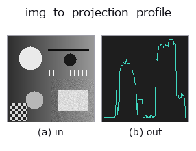

bridge op• Data kinds: image → signal
• Call: fullseye.apply(img, "img_to_projection_profile", a=0.5, b=0.5) (the 2-D model is one image plus two scalar knobs a,b∈[0,1])

*The figure is the actual output on a synthetic 128×128 input. Left: input, right: output. Point clouds are drawn as a top-down scatter (brightness = z), 1-D series as a line plot, volumes as the maximum-intensity projection along z, videos as the middle frame, complex images as magnitude; return values that are not pictures are shown as the values themselves.*
Sweeping knob a (0.1 / 0.5 / 0.9, the other knob at its default):
▸ img_to_projection_profile: knob a sweep (docs site)
Sweeping knob b (0.1 / 0.5 / 0.9, the other knob at its default):
▸ img_to_projection_profile: knob b sweep (docs site)
On other images (synthetic scene / photo / coins. Top row: inputs, bottom row: their outputs. Knobs at default):
▸ img_to_projection_profile: other inputs (docs site)
*The 4th column is a colour (H,W,3) input. This op handles colour without crossing channels (it does not convolve the colour channel as a third spatial axis).*
Turns the projection profile, obtained by collapsing the image along 1 direction, into a 1-D signal — a basic quantity of page-layout analysis.
Whereas img_to_signal "reads 1 row/column as it is", this one bundles all rows (all columns) and collapses them into 1 line. Gaps between characters, ruled lines and band boundaries are buried in noise on 1 scan line, but once collapsed they rise up as valleys.
• b → orientation. b < 0.5 collapses vertically, length W (a representative value per column; gaps between characters set side by side become valleys), b >= 0.5 collapses horizontally, length H (per row; the space between lines becomes a valley). As in img_to_signal, b sets the orientation, but a means something different.
• a → upper trim ratio. The values along the collapsed axis are sorted in descending order and only the top m = max(1, round((1-a) * N)) are averaged. a=0 is a plain mean projection (the classical projection profile itself), a=1 is a maximum projection (MIP), and in between it is a continuous compromise that "keeps only the outliers and evens out the rest".
• Returns: 1-D float64. Not normalised (the range stays that of the input; for a [0,1] image, [0,1]). The length is set by the orientation (W or H). An empty frame gives a constant-valued sequence.
Why the knob is a trim ratio: the mean projection is robust to noise, but 1 thin line gets diluted by the background and disappears. The maximum projection keeps thin lines, but 1 bright spot lifts the whole column. Whichever you choose, something is lost, so how much to discard was made the knob, making the trade-off explicit. Raising a keeps thin structures, lowering it evens out noise ―― it is monotonic, and the two ends coincide with the 2 classical projections.
For dark characters, invert first. This op keeps the larger values, so if you pass black characters on white as they are, the trim picks up the background. Insert invert (ledger) and a keeps "where the characters are dark".
Prior work and correspondence: the mean projection is a classic of document analysis itself (the quantity Postl 1986 / Baird 1987 used for skew estimation), and in HALCON it corresponds to gray_projections (horizontal and vertical grey-level projections) —— this fills in an op that was covered: false in the correspondence table. The family that moves continuously towards the maximum projection by trimming from the top follows the same idea as one used in time-frame fusion in fluorescence microscopy, the quantile projection (taking the upper 75 % point), but since this one is the mean of the top m, the two ends coincide exactly with the mean and maximum projections, and it is monotonic in between.
Where to use: line segmentation (collapse horizontally and look for valleys), character segmentation (collapse vertically), ruled-line detection, band boundaries, and visualising the decision quantity that deskew uses internally. Downstream is the family of 1-D functions (tb_smooth_funct_1d_gauss / tb_local_min_funct_1d / tb_derivate_funct_1d).
• gallery2d_bridge family guide
• Sample-data catalog (download URLs / licences) — 2-D uses skimage.data (BSD/public domain) plus synthetic images; 3-D lists download URLs for real data sources (Stanford, PDS, …).
• Operator provenance and references — the sources of the research/methods this op family came from.
• The canonical algorithm (author, year) and its uses are named in the family usage guide above.
The program below has been verified to run (same input as the figure). In Studio's help this block becomes buttons that load and run it on the spot.
img_to_projection_profile 0.50 0.50
▸ Load this pipeline · Load & run
• gallery2d_bridge — py -3.11 examples/gallery2d_bridge.py
signal as input)identity · tb_create_funct_1d_array · tb_smooth_funct_1d_gauss · tb_smooth_funct_1d_mean · tb_derivate_funct_1d · tb_integrate_funct_1d · tb_zero_crossings_funct_1d · tb_abs_funct_1d
bridge)img_to_points · img_to_keypoints · img_to_signal · img_to_counts · img_to_matrix · img_to_video · img_to_volume · img_to_lightfield
*Provenance: ops.py — 2D operator registry. This per-op note is generated by tools/opdocs.py md (do not hand-edit).*
© 2026 Kazufumi Furuse — Fullseye operator documentation. Licensed under Apache-2.0.